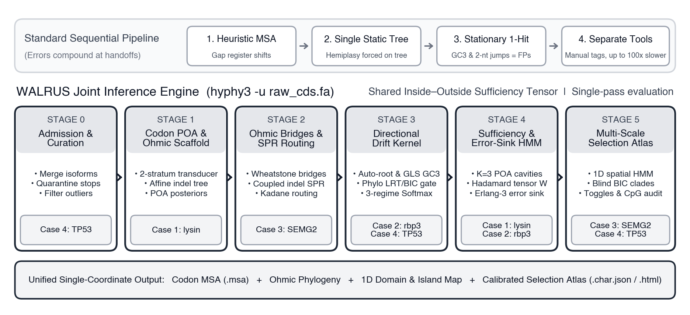

Stop Playing Telephone With Genomes: Why Joint Sequence-to-Selection Inference Changes Molecular Evolution
For thirty years, studying natural selection in protein-coding genes has worked like a game of broken telephone. You clean reading frames in one script, align sequences in a heuristic aligner, strip "messy" gappy columns in a masker, build a single static tree in a nucleotide phylogenetic program, manually label foreground branches, and finally feed the frozen result into half a dozen separate dN/dS tools. Every stage treats the previous tool's noisy best guess as infallible ground truth—so staggered gaps masquerade as bursty adaptation, column strippers delete real evolutionary indels, recombination gets crushed onto vertical branches, and decaying pseudogenes look just like positive selection. With HyPhy 3 and its flagship engine WALRUS (Wheatstone Alignment and Likelihood Rate Unification for Selection), we replace that entire five-tool bucket brigade with a single statistical coordinate system—running from raw, unaligned sequences to multi-scale evolutionary forensics in 60 seconds on a laptop, or 100% locally inside a browser tab.
Instead of freezing a heuristic alignment or deleting gappy loops, WALRUS aligns in 61-codon space (Pair-HMM + POA) and propagates column homology posteriors (Phom) plus an Erlang-3 error-sink HMM directly into selection tests—cutting chimeric-exon false positives from 100% to 0% while keeping real indels intact.
Legacy workflows recompute Felsenstein pruning dozens of times across separate binaries. HyPhy 3 builds one analytical O(B) Inside–Outside Hadamard cavity tensor that simultaneously powers BUSTED-E, 1D domains, FEL/dFEL, MEME, aBSREL, RELAX, and epistasis in a single pass.
LoF_BF)Intact genes undergoing trait loss accumulate missense hits that mimic elevated dN/dS. With zero {Foreground} labels, WALRUS maps Purifying Core domains and computes a Core Invasion Bayes Factor—cleanly separating sonar/vision gains from blind-mole lens decay (LoF_BF = 4.5 × 107) across 10,898 mammal branches.
ISG15Given raw unaligned mammalian ISG15 CDS, hyphy3 walrus -u --coevolution finishes in 59.96 s on a laptop: preserving the horseshoe-bat ΔK77–C78 hinge deletion that HmmCleaner strips, mapping the SARS-CoV-2 PLpro patch, and proving the paper's wet-lab epistasis hypothesis directly from sequences (q ≤ 5.5 × 10−18).
1. The Handoff Trap: Four Ways Classical Pipelines Invent Selection (or Erase It)
Ask any comparative genomicist what actually consumes 90% of their time in a selection study, and the answer is almost never running the final likelihood ratio test. It is nursing sequences across the brittle handoffs between tools—and wondering afterward whether the flashy "positively selected" hit at the end of the pipeline is real biology or an upstream scar.
Why are sequential pipelines so fragile? Because at every handoff, uncertainty is thrown away and replaced by a point estimate:
- The Alignment Catch-22 (Staggered Gaps vs. Stripped Loops): General-purpose aligners optimize heuristic gap penalties without knowing a phylogenetic codon model exists downstream. When indels are frequent, slightly misaligned codon registers pack apparent nonsynonymous changes onto short spans—driving standard
MAFFT + BUSTEDfalse-positive rates to 100% on strictly neutralPAML M1aandM7simulations (and 100% when a single taxon carries a chimeric terminal exon). Practitioners respond by running aggressive column maskers likeHmmCleanerorGblocks—which solve the false-positive problem by deleting the very flexible hinges and viral-contact loops where adaptive evolution actually happens. - Crushing Mosaic Recombination Onto a Single Tree: If two lineages exchange a 200-bp tract by homologous recombination or gene conversion, no single tree describes the whole gene. Forcing that mosaic alignment onto one static Newick tree obliges the codon model to explain the incompatible mutations via bursts of parallel substitutions—producing 65% to 74% gene-wide false positives on purely neutral 2- and 3-segment recombinants.
- Confusing Neutral Rate & Compositional Quirks With Adaptation: Standard stationary 1-hit codon models assume synonymous substitutions tick uniformly across the gene and base composition sits at equilibrium. When synonymous rates vary across codons (because of mRNA structure, splice enhancers, or dual-coding constraints) or when
GC3-biased gene conversion pushes a clade toward G/C-ending codons, uncorrected gene-wide selection tests hit 80%–99% false positives under flat neutrality. - Mistaking Incipient Pseudogenization for Adaptive Innovation: Orthology pipelines like
TOGAflag genes as lost once a premature stop codon or frameshift appears. Yet for millions of years after an animal moves into a dark cave or deep ocean, a newly vestigial gene can retain a completely intact open reading frame while quietly accumulating missense mutations inside its once-untouchable structural core. On a naive dN/dS scan (or worse, when one poorly projected exon slips out of register), relaxed constraint and localized core decay routinely masquerade as lineage-specific positive selection.

hyphy3 walrus processes raw coding sequences (-u) or curated alignments (-a) through six coupled stages sharing a single Inside–Outside Hadamard sufficiency tensor: Stage 0 6-frame admission & contaminant quarantine → Stage 1 codon Pair-HMM + Partial Order Alignment (POA) with per-column homology posteriors Phom → Stage 2 tree-free Ohmic Wheatstone bridges & coupled indel-SPR routing → Stage 3 BIC-gated 3-regime directional GC3 drift kernel → Stage 4 cavity sufficiency & Erlang-3 error-sink HMM → Stage 5 unlabeled multi-scale selection, domain, pseudogene, and epistasis atlas.
Before trusting any biological story, we stress-tested WALRUS—both starting from aligned inputs (-a) and completely blind from raw unaligned FASTA files (-u)—against archived HyPhy 2.5 and MAFFT baselines across 8,220 simulated coding alignments spanning six pathology pillars. Here is what happens when upstream uncertainty is propagated instead of ignored:
| Pathology Stress Test (Null = No Positive Selection; Alt = True Selection) | Replicates | Standard Sequential Baseline | WALRUS (-a) |
Auto WALRUS (-u) (Unaligned Input) |
|---|---|---|---|---|
| Chimeric Terminal Exon (Null) | 100 | 100.0% FPR (BUSTED) |
2.0% FPR | 0.0% FPR (88% bridges localized) |
| 1-bp Frameshifts & Internal Stops (Null) | 200 | Crashes / out-of-frame | 0.0% FPR | 0.0% FPR (2.0/2.0 quarantined) |
| Intragenic Recombination (2-Segment Mosaic Null) | 100 | 65.0% FPR (Single-tree BUSTED) |
3.0% FPR (100% bridge recall) | Routed via local SPR |
Strong Synonymous Rate Variation (Neutral CV1 / CV3 Null) |
200 | 99.0% / 94.0% FPR (No-SRV) | 0.0% / 0.0% FPR | 0.0% / 0.0% FPR |
High-Indel Neutral Evolution (PAML M1a, λindel = 0.06) |
100 | 100.0% FPR (MAFFT + BUSTED) |
31.0% (MAFFT) / 3.0% (True MSA) |
18.0% FPR (Mean Phom = 0.975) |
High-Indel Positive Selection (PAML M8, λindel = 0.06 Alt) |
100 | 66.7% Power (MAFFT + BUSTED) |
96.0% Power | 98.0% Power (from raw FASTA!) |
Strong GC3 Compositional Drift (ψ = 2.0 Null / Alt) |
200 | Stationary bias | 2.0% FPR / 71.0% Power (100% BIC gate) | Directional Softmax active |
2. Interactive Forensic Comparator: Watch How WALRUS Separates Biology From Artifacts
Numbers in a benchmark table tell you that joint inference works; seeing what happens to real codons shows you why. Click through the four authentic biological scenarios below—drawn directly from our mammalian comparative genomics runs—to compare what a standard sequential pipeline concludes versus how WALRUS resolves the exact same locus:
3. Under the Hood Without the Jargon: Why One Shared Tensor Beats Six Separate Tools
If running a single codon model on a 700-species tree used to take hours, how can WALRUS align raw sequences, route recombination, audit compositional drift, segment protein domains, and run eight distinct gene-, branch-, site-, and epistasis-level tests in minutes—or seconds on a laptop?
Think about how traditional phylogenetic suites work. Running BUSTED, FEL, MEME, aBSREL, RELAX, Contrast-FEL, and BGM one after another is like hiring seven detectives who refuse to share notes: every single tool re-reads the entire alignment and recomputes Felsenstein's 61×61 codon matrix exponentials from the leaves to the root thousands of times during numerical optimization, estimating branch gradients one branch at a time.
HyPhy 3 changes the engine from the ground up around a simple mathematical idea—Inside–Outside cavity sufficiency:
- Two Passes Give Every Branch Gradient at Once (
O(B)Adjoints): Instead of nudging each branch length one by one, HyPhy 3 sweeps once up the tree from tips to root (the Inside pass, collecting descendant codon likelihoods) and once down the tree from root to tips (the Outside pass, collecting everything in the rest of the tree). Packing unique codon site patterns into dense61 × Pblocks accelerated by Apple Silicon AMX, AVX2/NEON, or WebAssembly SIMD128 matrix kernels makes core methods 20.5× to 87.3× faster than legacy HyPhy 2.5 to identical log-likelihood precision (Δ ln L < 10−4). - The Evolutionary Cavity Tensor (
W_tensor): At every branch b and codon column s, combining the Inside vector below b with the Outside vector above b creates a self-contained "evolutionary cavity"—an exact statistical summary of which ancestral and descendant codons the rest of the tree supports at that specific branch and site, weighted by Stage 1's column homology confidence Phom. - Eight Lenses on One Shared Coordinate System: Once that shared cavity tensor is computed—and insulated against residual alignment junk by a spatial Erlang-3 error-sink HMM that requires at least three consecutive anomalous sites before quarantining a micro-segment—every downstream evolutionary test queries the same sufficient statistics in memory. Branch tests know where the 1D
Purifying Coredomains sit; site tests know which branches experienced compositionalGC3drift; and epistatic co-evolution screens test pairs of sites directly on their posterior branch-substitution vectors.
4. End-to-End Showcase: One Unaligned FASTA, 60 Seconds, and the Nature 2025 Bat ISG15 Story
To see what this looks like on a real biological discovery, let's walk through a landmark recent study by Morales, Hiller, and the Bat1K Consortium (Nature 2025, 638:449–458), who asked a central question in zoonotic virology: how do bats restrict coronaviruses like SARS-CoV-2 without suffering the runaway hyperinflammatory cytokine storms seen in severe COVID-19?
Sequencing 10 new reference bat genomes across a 115-mammal comparative panel, their genome-wide screen converged on ISG15 (interferon-stimulated gene 15), a 165-codon tandem ubiquitin-like modifier built like a molecular dumbbell:
- An N-terminal lobe (
Ubl1, residues 1–75) and a C-terminal lobe (Ubl2, residues 83–151) that conjugates onto viral and host proteins via a C-terminalLRLRGGmotif (residues 152–157) after the cellular proteaseUSP18clips off an 8-residue pro-peptide tail (residues 158–165); - A flexible inter-domain hinge (residues 76–82,
D K C D E P L) carrying a critical reactive cysteine,Cys78. In humans,Cys78forms disulfide homodimers (C78–C78) that act as an extracellular cytokine—triggering pro-inflammatory signaling during severe COVID-19—while SARS-CoV-2 uses its papain-like protease (PLpro) to dock ontoUbl2(atN89,W123,T125,P130, andF145/L145) and stripISG15off host sensors.
In Morales et al., piecing together the evolutionary story of ISG15 required chaining five separate bioinformatics tools (TOGA → MACSE → HmmCleaner → IQ-TREE → exploratory branch-only aBSREL), manually inspecting amino-acid sequence logos because HmmCleaner masks gappy hinge columns, running AlphaFold2-Multimer structural docking against SARS-CoV-2 PLpro, and performing wet-lab mutagenesis (C78A, ΔC78, S77C) when deleting Cys78 in human ISG15 unexpectedly failed to reproduce the antiviral potency of horseshoe-bat ISG15.
Now let's strip away every gap, tree, domain annotation, and branch label, and hand the raw, unaligned 115-mammal ISG15 coding sequences to a single command on an Apple Silicon laptop:
hyphy3 walrus -u ISG15_Nature2025_115mammals_unaligned.fa --coevolution --threads 10 \ -o ISG15_115mammals.walrus.json --html ISG15_115mammals.walrus.html
Total wall-clock runtime: 59.96 seconds. (We also ran the exact same unaligned command on the entire 837-assembly TOGA2 mammalian release, automatically quarantining 1 fragmented assembly and characterizing all 836 mammals end-to-end.) Without a single human intervention, that one-minute laptop run recovers every evolutionary conclusion of the Nature paper—and directly resolves three mechanistic questions that the sequential pipeline could not test (Figure 2):
![Two-panel summary of the 59.96-second unaligned WALRUS reanalysis of mammalian ISG15 (Morales et al., Nature 2025): (A) exact de novo codon-level reconstruction of the ancestral Rhinolophoidea 6-bp hinge deletion (Delta K77-C78 + D76L) preserved without HmmCleaner masking at mean column posterior PP = 0.991, and (B) Manhattan plot of 18 MEME episodically diversifying sites across Ubl1 and the Ubl2 SARS-CoV-2 PLpro binding patch overlaid with 6 highly significant epistatic co-evolving residue arcs.](images/walrus_fig2_isg15_nature2025.png)
ISG15 (115 mammals, reanalyzing Morales et al., Nature 2025).
(A) Starting from raw unaligned coding sequences (-u), Stage 1's joint codon Pair-HMM + POA aligner reconstructs the inter-domain hinge (Human 74–82) with mean column homology posterior PP = 0.9914, preserving and pinpointing the exact ancestral Rhinolophoidea synapomorphy—a 6-bp in-frame deletion Δ(K77–C78) coupled with D76L across horseshoe (Rhinolophus), leaf-nosed (Hipposideros, Doryrhina), and Bat1K trident (Aselliscus) bats—while showing that Cys78 is under intense purifying selection (FEL p = 2.96 × 10−6) in all non-rhinolophoid mammals.
(B) Simultaneous site-level selection (BUSTED-E p = 2.15 × 10−12; 18 MEME sites, red lollipops) and phylogenetic epistasis (--coevolution, overhead arcs) map directly onto the influenza NS1B patch (A11, F15, A61) and the SARS-CoV-2 PLpro groove (S93/T95/R99, Q109, W123, T125S, P130, P144/L145), anchored by three inter-domain epistatic bridges (L5 ↔ C78, q = 3.3 × 10−20; N88 ↔ F126, q = 6.8 × 10−24; L72 ↔ T147, q = 1.5 × 10−20).
Discovery 1: Preserving the Ancestral Bat Hinge Deletion Without Masking
Because WALRUS scores insertions and deletions along tree branches inside a 61-codon substitution framework rather than stripping gappy columns, it retains the entire inter-domain hinge at high confidence (PP = 0.991–1.000). Across outgroup mammals and non-rhinolophoid bats (such as Myotis myotis, Rousettus aegyptiacus, and Mops condylurus—the exact outgroup controls that failed to restrict SARS-CoV-2 in Morales et al.'s functional assays), Cys78 is intact and strongly conserved (FEL LRT = 21.84, p = 2.96 × 10−6, Simes q = 4.98 × 10−5). Then, on the stem of superfamily Rhinolophoidea—uniting all horseshoe bats (Rhinolophus affinis, R. sinicus, R. ferrumequinum, R. trifoliatus), Old World leaf-nosed bats (Hipposideros, Doryrhina), and trident bats (Aselliscus stoliczkanus)—evolution excises the exact 6-bp K77–C78 dipeptide and substitutes hydrophobic D76L (V V L - - D D P L), locking bat ISG15 into an inflammation-sparing monomer.
Discovery 2: Pinpointing the Viral Antagonism Surface & the Exact USP18 Cleavage Junction
Whereas exploratory aBSREL only asks which branches experienced selection, WALRUS simultaneously delivers gene-wide (BUSTED-E LRT = 52.55, p = 2.15 × 10−12; LRT = 87.75, p = 4.77 × 10−20 across 836 mammals) and site-resolved forensics, while deconvolving strong mammalian GC3 drift (χ² = 558.1, p = 1.32 × 10−12) and 34 Wheatstone reticulate bridges. Its 18 episodically diversifying MEME sites and 69 convergent/toggle sites light up the precise hydrophobic anchor and S1 contact loops grabbed by SARS-CoV-2 PLpro: W123 (MEME p = 0.0056, Simes q = 0.036), P130 (p = 0.0032, q = 0.022, mutating in Hipposideros armiger), P144 (p = 0.0031, q = 0.021, immediately beside L145/F145L), Q109 (p = 0.0048, q = 0.032, mutating in Rhinolophus sinicus), the S93 / T95 / R99 S1-loop triad, and 5× convergent T125S. Even more remarkably, on the 836-mammal TOGA2 alignment, Stage 5's unsupervised 1D spatial HMM places a single structural domain boundary at codon 160 (Human G157)—rediscovering from evolutionary rates alone the exact LRLRGG↓ protease cleavage site separating mature ISG15 (ω̄ = 0.45) from its cleaved C-terminal pro-peptide (ω̄ = 0.79)!
Discovery 3: Proving a Wet-Lab Epistasis Hypothesis Purely From Sequences
Here is the kicker. When Morales et al. deleted Cys78 in human ISG15 in the lab, it did not recreate the potent anti-SARS-CoV-2 activity of horseshoe-bat ISG15—leading them to conclude that Cys78 loss depends epistatically on companion substitutions at the PLpro interface, specifically pointing to N89E, T125S, and F145L from AlphaFold2-Multimer docking. With zero structural templates and zero prior residue labels, WALRUS --coevolution detects six co-substituting residue pairs across the 115-mammal phylogeny—and look where the top pairs land:
| Rank | Co-Evolving Pair (hg38) |
Shared Subs (Exp.) | Cosine | BH FDR q-value | Structural & Functional Meaning in ISG15 |
|---|---|---|---|---|---|
| #1 | N88 ↔ F126 |
1.67 (0.06) | 0.568 | 6.77 × 10−24 | Direct PLpro Groove Coupling: Immediately flanks N89 and T125—two of the three exact SARS-CoV-2 PLpro contact sites highlighted by Morales et al.! |
| #2 | L72 ↔ T147 |
2.06 (0.11) | 0.535 | 1.46 × 10−20 | Hinge-to-Tail Allosteric Bridge: Couples the pre-hinge anchor of Ubl1 (4 aa before D76L) directly to the C-terminal PLpro groove (2 aa past L145/F145L). |
| #3 | L5 ↔ C78 |
1.99 (0.07) | 0.530 | 3.25 × 10−20 | Direct Cys78 Partner: Physically couples hinge substitutions at Cys78 to the N-terminal β1-strand of Ubl1. |
| #4–#6 | R44 ↔ I84, S18 ↔ S146, T6 ↔ F122 |
2.08–3.18 | 0.503–0.521 | ≤ 5.49 × 10−18 | Inter-Lobe Clamping: Links the Ubl1 helix and β1–β2 turn across the domain interface to I84 (hinge exit), S146 (next to L145), and F122 (next to W123). |
That table explains in one glance why a single-residue CRISPR or point-mutant swap in human cells failed to phenocopy the bat protein: evolution did not merely snip Cys78 out of the linker; when the hinge shortened, Ubl1 and Ubl2 clamped into a new inter-domain geometry that co-evolved as a coupled epistatic unit with the N88/N89, F122/W123/T125/F126, and L145/S146/T147 viral protease interface.
5. Genome-Scale Trade-Offs & Zero-Install Browser Forensics
What happens when you turn this same unlabeled lens loose across hundreds of mammalian genomes and multiple organ systems at once? Running hyphy3 walrus --coevolution across 8 full-scale mammalian TOGA alignments (626–723 species per gene; 5,461 sequences and 10,898 unlabeled branches) maps reciprocal evolutionary trade-offs across ecological transitions without a single user-supplied clade tag (Figure 3):
![Two-panel mammalian phylogenomics showcase across 10,898 unlabeled branches in 8 sensory and metabolic genes (~700 mammals/gene): (A) joint phase plane of RELAX selection intensity K versus Purifying Core Invasion LoF_BF separating adaptive remodeling (green), regressive cryptic pseudogenization (blue), and single-exon alignment slips (orange diamond, Raccoon AQP2), and (B) reciprocal organ gain-and-loss matrix across echolocating bats, deep-diving whales, the blind echolocating tree mouse Typhlomys cinereus, golden moles, talpid moles, and desert rodents.](images/walrus_fig3_adaptation_vs_regression.png)
RELAX) against the joint adaptive vs. Purifying-Core Invasion axis (aBSREL / LoF_BF) cleanly partitions branches into three regimes without prior labels: Adaptive Remodeling with an intact structural core (top right, green: trichromatic primates in OPN1SW, desert rodents in AQP2, echolocating mammals in TMC1/SLC26A5), Regressive Gene Decay where missense mutations invade ultra-conserved core domains of intact ORFs (bottom left, blue: subterranean moles/desmans in CRYAA, whales and horses in UCP1), and Localized Exon Artifacts (bottom center, orange diamond: raccoon AQP2 C-terminal exon slip).
(B) Across genes, the same lineages simultaneously register adaptive gain in active sensory/metabolic organs and regressive loss in vestigial ones—exemplified by the blind ultrasonic-echolocating tree mouse (Typhlomys cinereus), caught decaying in eye-lens CRYAA while converging with bats, dolphins, and shrews at top positively selected sites in hair-cell TMC1 and SLC26A5 (Prestin).
Look at row three of Figure 3B: the Chinese pygmy dormouse / soft-furred tree mouse (Typhlomys cinereus), discovered experimentally in 2021 to be a subterranean-foraging rodent that navigates by ultrasonic echolocation. Given nothing but unlabeled sequences, WALRUS flags Typhlomys for incipient lens regression in CRYAA (LoF_BF = 16.2, K = 0.676) while simultaneously catching it undergoing intense selection in both cochlear amplifier genes—TMC1 (RELAX K = 2.02, p = 9.5 × 10−5) and Prestin SLC26A5 (aBSREL p = 0.038)—sharing five top MEME convergent amino-acid replacements and a TM7 ↔ STAS epistatic pair (q = 3.5 × 10−126) with echolocating bats, shrews, and solenodons.
Web servers struggle with two bottlenecks: queue limits on large comparative datasets and strict data-governance rules around pre-publication clinical or surveillance sequences. Because the WALRUS web workbench (veg.github.io/hyphy-3) executes the exact same deterministic C++20 engine inside a browser Web Worker via SIMD128 WebAssembly, not a single nucleotide ever leaves your laptop—and you can export a self-contained, interactive single-file HTML dossier (.walrus.html) to share with collaborators or attach directly as supplementary material.
6. Reproducible CLI, Python & Browser Quickstart
HyPhy 3 (v0.0.1, MIT License) is available today at github.com/veg/hyphy-3 with native C++20 CLI binaries (hyphy3 + 18 standalone method tools), zero-copy Python 3 bindings (hyphy3 / _hyphy3), and the live WALRUS WebAssembly Workbench.
# 1. End-to-end unaligned characterization + epistasis (reproduces the 60s Nature 2025 ISG15 run) hyphy3 walrus -u ISG15_unaligned.fa --coevolution --threads 10 \ -o ISG15.walrus.json --html ISG15.walrus.html --out-msa ISG15.walrus.msa.fa # 2. Unlabeled phylogenomic screen separating adaptation vs. cryptic pseudogenization (LoF_BF) hyphy3 walrus -a CRYAA.fasta -t speciesTree.nwk --coevolution --threads 8 \ -o CRYAA.walrus.json --html CRYAA.walrus.html # 3. Run any of the 18+ classic HyPhy methods at 20x-87x native Inside-Outside speed hyphy3 busted --alignment adh.nex --srv Yes --multiple-hits Double+Triple --error-sink hyphy3 meme --alignment CD2.nex --threads 8 --html CD2.meme.html